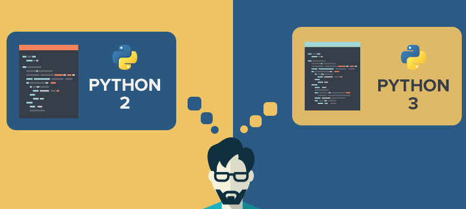
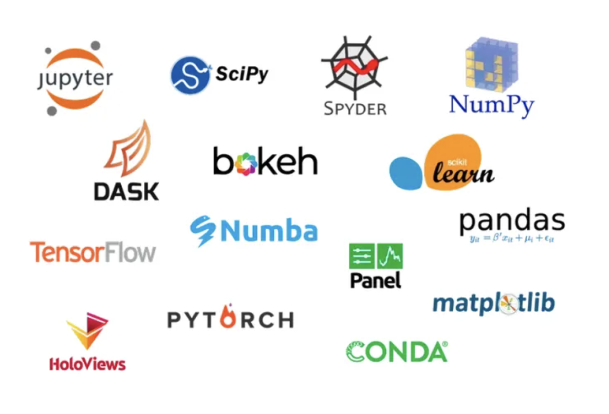
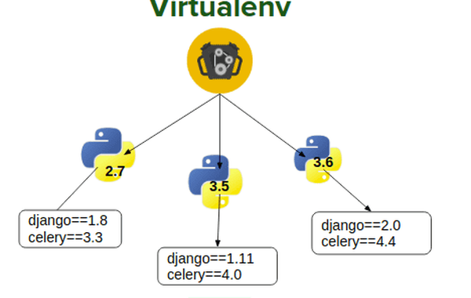

Sprint Zero for a Data Scientist
In agile software development frameworks, such as Scrum, development is conducted in time-boxed work iterations called Sprints. Sprint Zero is all the work that needs to happen before you can start actually development1.
Python versions
Technology is constantly changing. That the great thing about our industry and the frustrating thing about our industry. In Python, there was a bit of a riff when the language went from version 2.x to 3.x. The debate is mostly over but be aware that some popular packages were slow to embrace Python 3 and developers were forced to choose between versions.

Despite a few staunch holdouts, Python 3 is the present and future of the language. You can read more about the version debate at wiki.python.org.
For this blog, we’re going to use Python 3. If you’re using MacOS or Linux, you probably have a version of Python already installed. Verify by typing ‘python –version’ in the terminal.
$ python --version
Python 3.9.16
If you have Python version 3.9 or later, you are good and can skip the section on installing Python.
Anaconda Distribution
If you don’t have Python version 3.9 or later on your computer, the Anaconda Distribution is the recommended installation. Anaconda is an open source distribution of Python that comes with many of the popular data science packages.

The Anaconda Distribution is available at https://www.anaconda.com/.
Once installed, you should be able to verify the Python version in the terminal by using python --version or python3 --version .
$ python3 --version
Python 3.9.16
Anaconda comes with many of the Python packages a data scientist will need. You can view a list of the packages at https://docs.anaconda.com/. We will be using:
- sqlalchemy
- pandas
- scikit-learn
- beautifulsoup4
- flask
- django
- jupyter
- …and many others
Python PIP
PIP is the recommended tool for installing Python packages. It comes with the Anaconda Distribution. Verify that pip is installed with pip --version or pip3 --version.
$ pip --version
pip 9.0.1
$ pip3 --version
pip 9.0.1
Virtual Environments
If you expect to use Python for more than one project, I would highly encourage you to isolate your Python environments.

Virtual environments are isolated containers containing the software dependencies for a given project. This is important because by default Python packages, such as Django or Pandas, are installed in the same directory. This is problematic because if you do this long enough, you will eventually work on projects that use different versions of Python packages. You may join an existing project built using Django 1.11 but all your current projects are using Django 2.2. It would be very difficult to juggle upgrading / downgrading packages. With virtual environments, the community has solved the problem for you.
Python developers will debate certain development approaches but we all use virtual environments. Use a dedicated virtual environment for each new Python project.
If you choose to use a virtual environment, I recommend Pipenv. To install Pipenv, we can use pip.
$ pip install pipenv
Using isolated environments is optional and you can easily transition when the need arises. You can find more information about at the following websites:
Jupyter Notebook

The Jupyter Notebook is an open-source web application that allows you to create and share documents that contain live code, equations, visualizations and narrative text. It is popular among data scientists and comes as part of the Anaconda Distribution. We will be using Jupyter later in this book. Confirm Jupyter’s installation with jupyter --version
$ jupyter --version
4.4.0
SQLite

SQLite is a compact, cross platform, self-contained relational database management system that is available in the public domain. SQLite is included with Mac OS X by default. It is located in the /usr/bin directory and called sqlite3.
$ sqlite3 --version
3.16.2 2017-01-06 16:32:41 a65a62893ca8319e89e48b8a38cf8a59c69a8209
Using SQLite, users can create file-based databases that can be transported across machines, platforms, etc. The only thing needed to then view or edit these databases is the SQLite command line program, a GUI tool capable of communicating with SQLite, or python packages (such as sqlalchemy) that were created for database interactions.
SQLite on Windows
Instructions for installing SQLite on Windows will be provided if needed. SQLAlchemy may provide the required functionality needed to interaction with a SQLite file.
Celebrate
You are complete with Sprint Zero and ready to move forward!
-
Some agile practitioners argue there is no such thing as Sprint Zero. My response to them would be - this is my blog and I’m going to use the term as I see fit. ↩︎